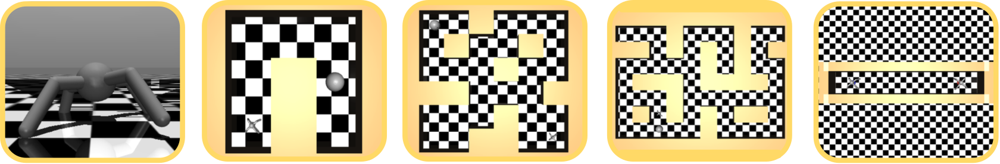
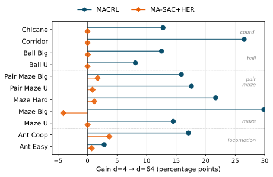

Sparse rewards make cooperative multi-agent reinforcement learning difficult because useful feedback often appears only after multiple agents coordinate over long horizons. We introduce Multi-Agent Contrastive Reinforcement Learning (MACRL), a goal-conditioned method that trains parameter-shared decentralized actors with a centralized contrastive critic. Instead of learning from sparse task rewards, the critic contrasts joint state-action embeddings with future achieved goals from replay, turning every trajectory into dense self-supervised signal. Across tasks that vary in horizon length, coordination difficulty, and object interaction, our method is competitive with strong HER-based baselines when exploration is sufficient and substantially more robust when sparse rewards become uninformative. On the hardest tasks, it obtains substantial non-zero success while non-contrastive baselines remain near zero. Depth-scaled residual networks, previously shown to benefit single-agent contrastive RL, transfer to this cooperative setting and improve several hard tasks by up to 30 percentage points, while providing little consistent benefit to the reward-based baseline. These results indicate that centralized contrastive supervision offers a promising foundation for scalable cooperative goal-conditioned control.
MACRL trains decentralized, parameter-shared actors with a centralized contrastive critic. Instead of fitting the critic to sparse task rewards, the critic matches state-action embeddings to future achieved goals sampled from replay and contrasts them against other achieved goals. This turns failed cooperative episodes into useful supervision for learning reachability.
For a state-action pair at time t, MACRL samples a future achieved goal gt+ = φ(st+k) from the same trajectory and treats it as a positive. Other achieved goals serve as negatives. The critic score is the negative distance between a state-action embedding and a goal embedding, so higher scores indicate that the candidate goal is predicted to be more reachable from the current decision.
Contrastive future-goal learning. A future achieved goal from the same replay trajectory is used as the positive for the current state-action pair, while other achieved goals act as negatives. The critic learns a reachability score without sparse reward labels.
For shared-body tasks, the critic encodes the full body state and joint action directly. For decoupled agents, MACRL uses a factored representation: each agent is encoded from its local body state, action, and shared current task/object context. The per-agent embeddings, produced by one shared encoder, are mean-pooled into a team representation and scored against a separate goal embedding. This keeps the critic centralized without a monolithic joint encoder; on the four decoupled tasks where aggregation was compared, mean pooling beats both min pooling and a monolithic encoder.
Factored contrastive critic. The current task/object context ot describes the present interaction state, while g is the candidate goal being evaluated. Per-agent embeddings are mean-pooled and compared with the goal embedding by negative Euclidean distance.
Following the deep contrastive RL architecture of Wang et al. (2025), the actor, state-action encoder and goal encoder are residual MLPs with LayerNorm and Swish activations. Depth-µP scales each residual branch by 1/√L, where L = d/4 is the number of residual blocks; applied to actor and critic together, it keeps the network trainable up to 1024 layers (L = 256) on both tasks where this was tested. We compare shallow (d=4) and deep (d=64) agents under matched architectures and training budgets.
We evaluate on cooperative goal-conditioned tasks of increasing difficulty, all implemented in MuJoCo/Brax with sparse success signals used for evaluation. MACRL does not use these sparse rewards to train its contrastive critic.

Environment layouts, left to right: open arena (Ant Easy, Ant Coop), U-maze, Big maze, Hard maze and the narrow corridor. The tasks built on them span shared-body locomotion, maze navigation, decoupled coordination, simultaneous-contact ball transport and Chicane object manipulation.
A single ant body is controlled by N decentralized agents that actuate disjoint joint subsets while observing the full body state. Coordination is implicit: sub-policies must align to produce coherent locomotion.
Separate ant bodies coordinate through shared task context under partial observability. Agents must avoid blocking each other, navigate shared layouts, or manipulate a shared object.
A ball moves only when both ants are within contact range simultaneously, enforcing strict temporal coordination before any object-level progress occurs.
Final performance (%): for each seed, the mean of the last five evaluations; mean and standard deviation over seeds. MACRL uses five to eight seeds per cell and the baselines three. Bold: highest value in the row. The blue-shaded columns mark MACRL (ours). MA-SAC+HER remains strongest on easy shared-body locomotion, while MACRL d=64 wins on the maze, pair, corridor, and object-centric tasks where sparse rewards become less informative. All baselines share MACRL's residual backbone, width and update budget; MA-SAC+HER and MADDPG+HER relabel within the same episode, and GCIQL learns values offline from the same replay.
| Environment | MACRL (ours) | MA-SAC+HER | GCIQL d=4 | MADDPG+HER d=4 | ||
|---|---|---|---|---|---|---|
| d=4 | d=64 | d=4 | d=64 | |||
| Shared-body cooperative: single ant, multiple controllers | ||||||
| Ant Easy (1a) | 91.4 ±1.5 | 94.2 ±0.8 | 95.2 ±0.7 | 95.9 ±0.3 | 88.0 ±1.3 | 0.0 ±0.0 |
| Ant Coop (2a) | 66.6 ±4.5 | 83.7 ±1.1 | 87.3 ±0.8 | 91.0 ±1.2 | 0.0 ±0.0 | 0.0 ±0.0 |
| Ant Coop (4a) | 69.2 ±3.7 | 82.1 ±1.6 | 88.0 ±0.9 | 91.5 ±0.7 | 0.8 ±1.3 | 0.0 ±0.0 |
| Ant Coop (8a) | 71.7 ±3.3 | 82.3 ±0.9 | 88.4 ±1.4 | 91.2 ±0.4 | 0.4 ±0.7 | 0.0 ±0.0 |
| Ant Maze U | 68.6 ±4.1 | 83.2 ±1.0 | 29.6 ±2.4 | 29.6 ±2.9 | 15.6 ±13.5 | 0.0 ±0.0 |
| Ant Maze Big | 39.5 ±2.6 | 69.3 ±3.1 | 17.4 ±3.2 | 13.3 ±2.3 | 0.2 ±0.3 | 0.0 ±0.0 |
| Ant Maze Hard | 21.5 ±1.2 | 43.2 ±5.2 | 11.1 ±1.6 | 12.2 ±0.4 | 0.7 ±0.8 | 0.0 ±0.0 |
| Decoupled multi-agent: separate bodies, partial observability | ||||||
| Pair Maze U | 56.4 ±3.7 | 73.7 ±2.9 | 13.9 ±1.2 | 14.7 ±2.0 | 0.0 ±0.0 | 0.0 ±0.0 |
| Pair Maze Big | 34.4 ±5.5 | 49.6 ±5.1 | 10.4 ±0.7 | 12.1 ±1.2 | 0.0 ±0.0 | 0.0 ±0.0 |
| Pair Maze Hard | 26.0 ±4.4 | 40.3 ±6.4 | 4.5 ±1.6 | 7.5 ±1.7 | 0.0 ±0.0 | 0.1 ±0.0 |
| Coop Ball U | 40.3 ±6.4 | 50.8 ±10.5 | 0.0 ±0.0 | 0.0 ±0.0 | 0.0 ±0.0 | 0.0 ±0.0 |
| Coop Ball Big | 12.1 ±3.6 | 25.3 ±5.9 | 0.0 ±0.0 | 0.0 ±0.1 | 0.0 ±0.0 | 0.0 ±0.0 |
| Pair Corridor | 41.7 ±9.4 | 68.2 ±3.1 | 0.0 ±0.0 | 0.0 ±0.0 | 0.0 ±0.0 | 0.0 ±0.0 |
| Chicane | 21.9 ±8.2 | 32.2 ±11.5 | 0.0 ±0.0 | 0.0 ±0.0 | 0.0 ±0.0 | 0.0 ±0.0 |
Shared-body environments. MA-SAC+HER is strongest on easy locomotion, where sparse rewards suffice; on maze navigation MACRL is substantially more robust, and depth improves it further.
Decoupled coordination and manipulation tasks. MACRL achieves meaningful success on pair mazes, simultaneous-contact ball transport, corridor, and Chicane tasks.
Training curves on representative hard tasks. Future-goal contrastive learning provides a usable training signal even when sparse task success is rare.
Centralization is not uniformly better: its value depends on how the achieved goal depends on the joint action. We compare MACRL's centralized critic with an independent per-agent contrastive critic at d=64, running the same seeds in both arms so the comparison is paired. Only the aggregation changes, except that on the decomposable tasks the independent arm is given per-agent goals, the formulation most favourable to independent learning. Centralization is worth +12.4 points on Chicane (p=0.041) and +13.0 on Coop Ball Big (p=0.002), whose achieved goal is the state of an object both agents act on (in Coop Ball it moves only under simultaneous contact), and +5.1 on the shared-body Ant Maze U (p=0.012). It costs 11.1 points on Pair Maze U and 14.7 on Pair Maze Big (both p<0.001), where the task decomposes into per-agent goal reaching and the independent critic wins on every paired seed.
| Environment | Achieved goal | Centralized (ours) | Independent | Gap | Centralized wins |
|---|---|---|---|---|---|
| Chicane | object pose | 32.2 | 19.9 | +12.4 | 6/6 |
| Coop Ball Big | object position | 25.3 | 12.3 | +13.0 | 7/8 |
| Coop Ball U | object position | 50.8 | 43.3 | +7.5 | 6/7 |
| Ant Maze U | body position | 83.2 | 78.1 | +5.1 | 8/8 |
| Pair Maze U | per-agent position | 73.7 | 84.7 | −11.1 | 0/8 |
| Pair Maze Big | per-agent position | 49.6 | 64.2 | −14.7 | 0/8 |
Success rate (%), paired over seeds. Positive gap favours centralization; bold gaps are significant under a paired test.
A factorization result accounts for where centralization is needed: summed independent critics can recover the centralized optimum only when the joint mutual information between state-action and goal equals the sum of the per-agent terms. That holds when one agent alone determines the goal, and fails most when the goal depends on the agents only jointly. The result says when independent critics are expressive enough to match, not which critic trains better with finite data and capacity.
We also ran the released ICRL code, in both variants it provides, on our tasks, with the episode length set to ours and a matched step budget; capacity is already comparable (4.19M against 4.27M parameters). Within ICRL, the independent variant beats the centralized one on all three decomposable tasks, reproducing the decomposable side of the boundary above. On Pair Maze U and Big it is also competitive with our independent arm (82.2 against 84.7, 59.1 against 64.2) and beats our centralized critic; on Pair Maze Hard it trails both of our arms (32.8 against 40.3 and 44.9). On object transport both ICRL variants stay near zero, so the other side is not tested within ICRL. Because ICRL's centralized variant also fails there, and ICRL uses four dense layers rather than a depth-scaled residual encoder, this gap does not isolate aggregation; it shows that the published method, with its published architecture and hyperparameters, does not solve the object-transport tasks.
| Environment | MACRL (ours) | ICRL (released code) | ||
|---|---|---|---|---|
| Centralized | Independent | Centralized | Independent | |
| Decomposable | ||||
| Pair Maze U | 73.7 ±2.9 | 84.7 ±0.9 | 23.9 ±2.4 | 82.2 ±1.6 |
| Pair Maze Big | 49.6 ±5.1 | 64.2 ±6.4 | 9.3 ±12.4 | 59.1 ±1.4 |
| Pair Maze Hard | 40.3 ±6.4 | 44.9 ±3.3 | 5.2 ±4.8 | 32.8 ±4.4 |
| Object transport | ||||
| Chicane | 32.2 ±11.5 | 19.9 ±10.4 | 0.0 ±0.0 | 0.3 ±0.3 |
| Coop Ball Big | 25.3 ±5.9 | 12.3 ±2.5 | 0.3 ±0.3 | 5.6 ±2.3 |
Final performance (%), mean ± standard deviation. Three seeds for ICRL; five to eight for MACRL, except three for the independent arm on Pair Maze Hard. Bold marks the best entry in each row.
Side-by-side comparisons of MACRL against baselines. Videos play as they scroll into view; click one to pause it. Percentages in the panel titles are success over the rollouts rendered from a single checkpoint, not the paper's evaluation metric; the tables above report the evaluated numbers. MACRL achieves meaningful coordination in settings where reward-based baselines receive little useful sparse feedback.
Coop Ball Big: MACRL d=4 (left) vs. d=64 (right), critic heatmaps above rollouts. With depth the relative reachability landscape sharpens along goal-connected corridors and suppresses dead ends; colour scales are per critic.
Pair Corridor: critic score over the two agents' positions at d=4 (left, or top on narrow screens) and d=64 (right, or bottom). The d=64 landscape is sharper; colour scales are per critic.
On these tasks, sparse-reward baselines receive essentially no useful feedback and converge near zero. MACRL's contrastive critic provides a training signal from every trajectory, even when sparse task success is rarely observed.
Chicane — MACRL d=4, MACRL d=64, MA-SAC+HER d=64 (left to right). Two ants carry a long bar through a U-shaped passage. MACRL learns the transport; every non-contrastive baseline stays at 0% on this task.
Coop Ball U — MACRL d=4, MACRL d=16 (an intermediate depth the paper does not report) and MA-SAC+HER d=64. The ball moves only when both ants are near it; MACRL discovers this coordination, while reward-based baselines stay at 0%.
Pair Corridor — agents must swap sides through a narrow passage without blocking each other. MACRL learns to pass; baselines stay at 0% because successes are too rare to bootstrap from.
Pair Maze U — two separate ants navigate toward a shared goal under partial observability. MACRL substantially outperforms the reward-based baseline, especially at greater depth.
Pair Maze Big — larger layout with a longer coordination horizon. MACRL's success drops in the larger layout but stays far above the reward-based baseline.
Ant Easy — simple single-controller navigation where both methods perform comparably, confirming the baselines are well-tuned on tractable tasks.
Ant Maze U — a U-shaped corridor requiring one major turn. MACRL strongly outperforms the HER baseline.
Ant Maze Hard — long detours and dead ends before a distant goal. MACRL d=64 reaches the goal far more often than the HER baseline, which rarely does.
Ant Maze Big — extended navigation horizon. The contrastive critic's dense training signal gives MACRL a substantial edge over HER on longer-horizon maze navigation.
Going from 4 to 64 layers improves MACRL on several hard tasks by up to 30 percentage points, while giving MA-SAC+HER little consistent benefit. Beyond that, how the network is scaled decides whether depth survives: scaling the critic alone tracks full actor-and-critic Depth-µP up to d=256, then collapses to 0% at d=512 and stays there, while scaling actor and critic together trains at every depth, reaching 84.2% on Ant Coop at d=1024. The recovery reproduces on the much harder Pair Maze Hard, where all six critic-only runs at d=512 and d=1024 never exceed 0.03% at any evaluation, while full scaling reaches 34.2% and 39.9%. Depth is not uniformly beneficial: on Pair Maze Hard the effect is non-monotonic and d=1024 is no better than d=64.
Left: Ant Coop 2a. Right: Pair Maze Hard. Critic-only µP collapses at d=512 on both tasks, while full actor+critic µP keeps training to d=1024; on Pair Maze Hard the curve is non-monotonic.
| Configuration | d=4 | d=8 | d=16 | d=32 | d=64 | d=128 | d=256 | d=512 | d=1024 |
|---|---|---|---|---|---|---|---|---|---|
| Ant Coop, critic only | 66.6 | 75.8 | 80.5 | 82.8 | 83.7 | 83.2 | 83.4 | 0.0 | – |
| Ant Coop, actor+critic | 60.0 | 76.6 | 78.9 | 82.2 | 81.4 | 83.7 | 83.3 | 81.6 | 84.2 |
| Pair Maze Hard, critic only | 26.0 | 30.8 | 33.6 | 38.9 | 40.3 | 34.6 | 34.0 | 0.0 | 0.0 |
| Pair Maze Hard, actor+critic | 28.4 | 38.0 | 32.9 | 41.6 | 38.5 | 34.0 | 41.1 | 34.2 | 39.9 |
Final performance (%). A dash marks a configuration that was not run. Full actor+critic scaling uses three seeds at every depth. Critic-only uses five at d=4 and d=64 and three at d=512 (and at d=1024 on Pair Maze Hard); elsewhere Ant Coop uses three from d=8 to d=32 and one at d=128 and d=256, and Pair Maze Hard one.

Gain from d=4 to d=64. Contrastive gains are larger on many hard tasks, while the best reward-based baseline changes very little. MACRL gains use only the seeds run at both depths, while the main results table uses every available seed, so they can differ by a few points from differences of its means.
Coop Ball U depth sweep: d=4, d=16, d=32, d=64 (one checkpoint each). The paper reports only d=4 and d=64; d=64 is higher, though not significantly across seeds.
AblationsWe compare three centralized critics on the decoupled tasks at d=64 under identical goals, budgets, actors and network sizes, so that only the aggregation differs. Mean pooling of per-agent embeddings is best on all four environments. The monolithic encoder, which concatenates the joint state and action, is worse everywhere and its input grows with the number of agents; min pooling, which sets the team score by the worst-placed agent, is also worse everywhere.
| Environment | Mean pooling (ours) | Min pooling | Monolithic encoder |
|---|---|---|---|
| Pair Maze U | 73.7 ±2.9 | 57.7 ±7.4 | 16.5 ±20.2 |
| Coop Ball U | 50.8 ±10.5 | 31.1 ±2.0 | 26.1 ±13.9 |
| Pair Corridor | 68.2 ±3.1 | 19.3 ±1.4 | 38.0 ±6.2 |
| Chicane | 32.2 ±11.5 | 13.8 ±4.7 | 8.9 ±3.7 |
Final performance (%), mean ± standard deviation over seeds.
On Chicane, replacing the deep goal encoder with a shallow d=4 encoder saves 31% of parameters while preserving success, suggesting most capacity is needed in the state-action reachability encoder.
Left: training curves. Right: final success vs. parameter count. A shallow goal encoder matches the full model while reducing parameter count.
Side-by-side: MACRL with deep goal encoder (d=64) vs. shallow goal encoder (d=4) on Chicane. Both achieve similar success rates, suggesting that the goal encoder can be made shallow without hurting performance on this task.
Adding agents does not automatically help. On Chicane, final performance is 32.2 ± 11.5% with two agents (six seeds), 31.9 ± 8.6% with three and 24.0 ± 15.1% with four (three seeds each). Three seeds cannot separate a limit of the aggregation from the task becoming harder, since four ants on one bar have more opportunity to apply conflicting forces.
Chicane with 2, 3 and 4 decoupled agents transporting the same bar.
@inproceedings{kich2026macrl,
title = {Scalable Multi-Agent Contrastive Reinforcement Learning},
author = {Kich, Victor A. and Yamamori, Satoshi and Morimoto, Jun},
booktitle = {Advances in Neural Information Processing Systems (NeurIPS)},
year = {2026}
}